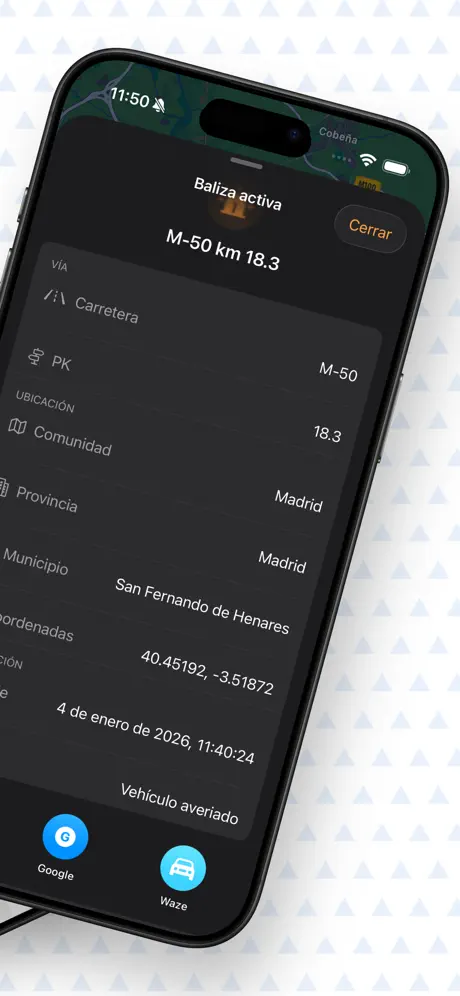
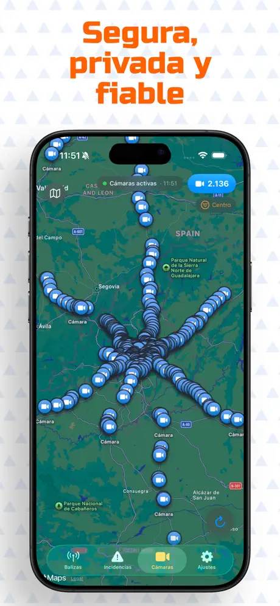
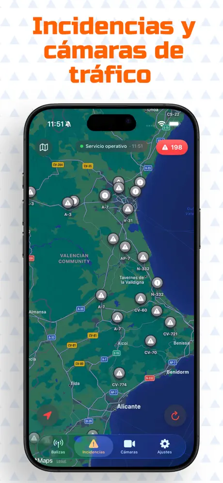
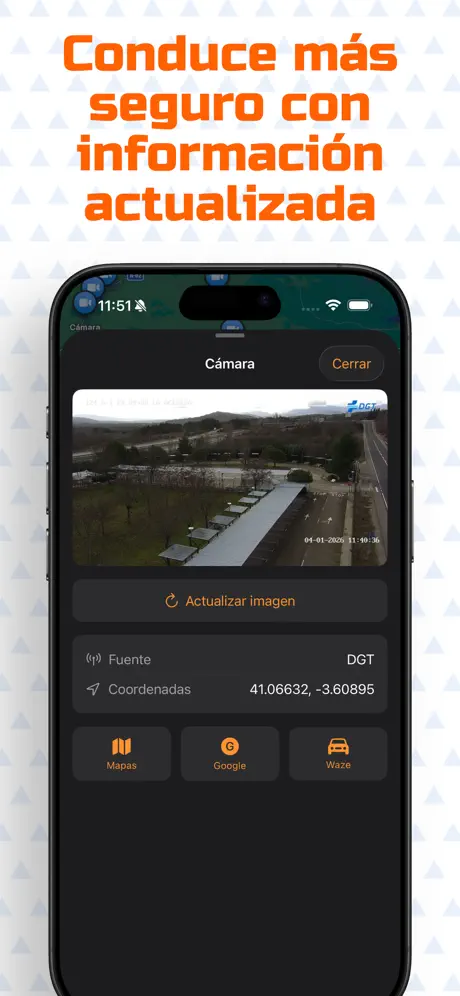

V-16 beacons and traffic map for Spain
View connected V-16 beacons, road incidents, and traffic cameras on a map.
The first iOS app in Spain to show connected V-16 beacons, launched on January 6, 2026. Balizas España brings public traffic data together to show beacon locations, accidents, road closures, and congestion. It includes 3D driving, CarPlay, widgets, and fuel prices. This is an informational app: it does not replace a physical beacon or signal a breakdown for your vehicle.
Screenshots
Designed for informed driving




Overview
What is Balizas España?
Balizas España is an independent companion application for iOS and Apple CarPlay designed to display real-time road hazard alerts published via open public traffic feeds.
What the app does
- Traffic data comes from DGT, Servei Català de Trànsit, and Trafikoa; fuel prices come from MITECO.
- Shows active V-16 beacons, road accidents, road closures, congestion, traffic cameras, and fuel prices.
- Offers a 3D driving mode with digital speedometer, on-screen hazard indicators, and audio alerts.
Clarifications
- Not a physical device: The app does not replace any physical safety beacon or vehicle equipment.
- Does not transmit breakdowns: The app only reads public data; it cannot broadcast breakdowns to traffic agencies.
- Independent project: Not affiliated with, endorsed by, or sponsored by the DGT or any government body.
Workflow
How Balizas España works
The app queries open public data sources and processes the information on your device.
Open Data
The app fetches official public open feeds with active road incidents.
On Your Device
Your iPhone processes coordinates, roadways, and kilometer marks locally. No proprietary servers.
En-Route Alerts
During driving mode, the app analyzes your heading and calculates visual or spoken alerts before hazards.
CarPlay & Widgets
Displays alerts on your car dashboard with Apple CarPlay and on your Home Screen with widgets.
Capabilities
Application features
Comprehensive road information tools to travel prepared.
Live V-16 Beacons
Markers displaying road identifiers, kilometer marks (PK), municipality, active duration, and direct directions via Apple or Google Maps.
Road Incidents
Reported alerts (DGT, Servei Català de Trànsit, and Trafikoa): accidents, road closures, congestions, adverse weather, and maintenance works.
Fixed & Average Speed Cameras Pro
Layer of speed monitoring stations across DGT and Catalan road networks with customizable geographic zone toggles.
Fuel Stations & Prices
Official prices for Diesel A, Gasoline 95, and Gasoline 98 from the Ministry for the Ecological Transition, with search radii from 5 to 50 km.
Over 2,000 Traffic Cameras
Cameras from DGT, Catalonia, and the Basque Country, with images refreshed every few minutes. Save favorites, add custom titles, and view them full-screen.
3D Driving Mode
Tilted 3D perspective oriented with your heading, digital speedometer, proximity radar, and on-route alert summaries.
Spoken Voice Alerts (TTS) Pro
Hands-free voice prompts synthesized locally when approaching beacons or hazards, ducking background car audio.
Home Screen Widgets
Small and medium interactive widgets showing your favorite highway camera or a mini-map of nearby incidents.
Apple CarPlay
In-car dashboard integration featuring a Points of Interest map and nearby event list.
Direct Answers
Frequently Asked Questions
Clear information regarding functionality, data sources, and pricing.
What does Balizas España show?
Does this app replace a physical beacon?
How does the app handle privacy and location?
Where does the traffic data come from?
Is this an official DGT app?
What are the app prices?
App Specifications
Update History
Changelog
Evolution and improvements of Balizas España.
- Improved data retrieval for speed cameras and road incidents
- Compatible with iPhone Duo and optimized for iPads
- New nearby road incident widgets
- Map area and locality selector to receive alerts for nearby incidents or beacons
- Road alerts: subscribe to alerts or beacons occurring along a specific road
- Gas stations in navigation mode
- Improved traffic camera management and search
- New Welcome screen
- Detailed setting to select which incident types to display on the map
- Native Apple CarPlay integration for seamless in-car driving.
- New widgets: Live mini-maps showing nearby road incidents and beacons.
- Improved incident categorization and map clustering.
- En-route hazard scan: previews and announces incidents along your planned route.
- Bug fixes and performance enhancements.
- Unified layers menu for customizable map views.
- Nearby gas stations with real-time fuel prices.
- Traffic camera favorites with live Home Screen widgets.
- Optimized map data clustering and automatic refresh timers.
- Fixed camera stream displays across Basque Country and Catalonia.
- Battery and performance optimizations.
- Detailed fixed and average speed camera layer.
- Proximity speed camera audio alerts in driving mode.
- Spoken voice announcements for road hazards, closures, and works.
- Efficiency and stability improvements.
- Enhanced 3D driving view with integrated digital speedometer.
- Highway beacon proximity alerts.
- Added regional traffic alerts from Catalonia and the Basque Country.
- Real-time on-route alert evaluation.
- Customizable traffic incident category filters.
- General performance and stability fixes.